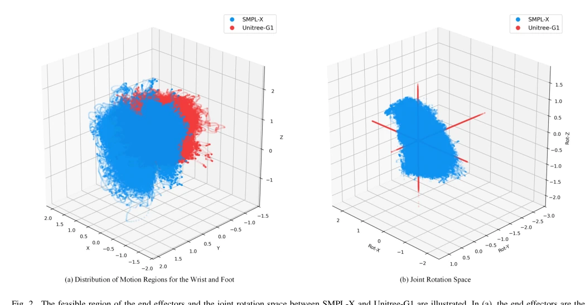
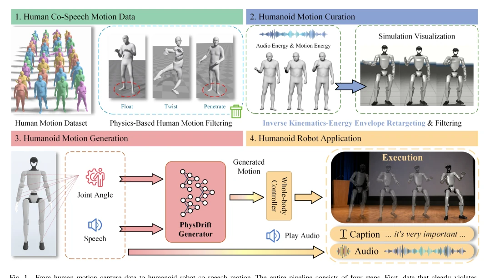
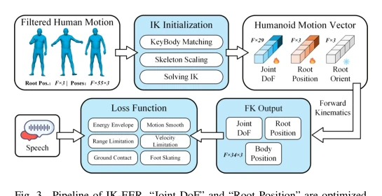
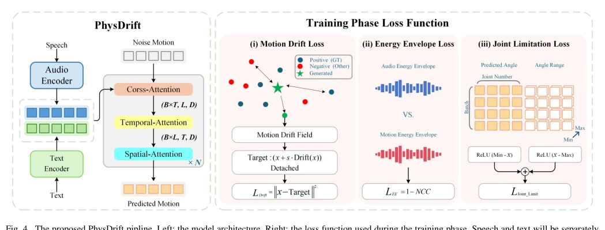

This paper finally dares to pull the term "humanoid" out of the shadow of "human". Traditional methods like Syntalker [49] or GestureLSM [12] first generate an SMPL-X and then hard convert, resulting in robots moving as if their tendons were pulled out, with rich expressions but physically floating. PhysDrift directly operates in robot body space, using MDF to replace the velocity field, avoiding jitter caused by integration errors. Although IK-EER data cleaning still bears a suspicion of "human intervention", the deployment on real machines is indeed stable. However, this method does not have low requirements for robot hardware, as it directly predicts joint trajectories; without some physical regularization, it would likely have fallen early. It proves that robot native representation is more suitable for embodied interaction than human intermediate states, counting as adding a brick to the "physical landing" of embodied AI, and is worth further verification on real robots.
Existing co-speech motion generation mainly relies on human-centric representations, such as SMPL-X [10]. Although datasets like BEAT [13] are rich, directly applying them to humanoid robots presents an "embodied gap". The retargeting process compresses motion diversity and weakens prosody synchronization [9]. Existing methods like [12] perform well on virtual humans, but when mapped to robots, motion manifold mismatch leads to physical infeasibility or expression distortion. Especially, the coupling of speech prosody and motion dynamics is easily lost in retargeting. It is necessary to directly model the robot joint space, avoiding distribution bias brought by intermediate representations, ensuring generated motion conforms to physical constraints while naturally expressing emotions, solving the problem of mismatch between human motion manifold and robot execution manifold.

Fig. 2. The feasible region of the end effectors and the joint rotation space between SMPL-X and Unitree-G1 are illustrated. In (a), the end effectors are the wrist and foot, which are common to both G1 and SMPL-X. (b) shows the joint rotation space of the shoulders, wrists, and hips for SMPL-X and
The framework is divided into two steps. First is IK-EER data construction, through inverse kinematics initialization, adding Energy Envelope loss, ensuring speech prosody and motion dynamics alignment while satisfying physical constraints. Second is the PhysDrift generation model, adopting Motion Drift Field (MDF) instead of Flow Matching's velocity field. MDF directly predicts displacement towards the target manifold, rather than tangent space velocity, avoiding jitter caused by cumulative integration errors. Formally, it minimizes drift field residual, using kernel functions to induce a local attraction process, attracting generated motion to the feasible manifold. The model directly outputs robot joint angles and root node pose, requiring no intermediate decoding. During inference, it generates in one step without iterative denoising, significantly improving real-time performance. Compared to traditional diffusion models, PhysDrift eliminates the generation-level embodied gap, ensures motion smoothness, and supports real-time interaction.

Fig. 1. From human motion capture data to humanoid robot co-speech motion. The entire pipeline consists of four steps. First, data that clearly violates physical laws or severely distorts limbs in human motions is filtered out. Next, the proposed IK-EER maps human motions onto humanoid robots to obt

Fig. 3. Pipeline of IK-EER. “Joint DoF” and “Root Position” are optimized through gradient-based motion refinement, while the root orientation is directly inherited from the human motion sequence.

Fig. 4. The proposed PhysDrift pipline. Left: the model architecture. Right: the loss function used during the training phase. Speech and text will be separately represented by modal encoders, and then fused with noisy motion sequences through cross-attention. Finally, the model outputs the correspo
Based on the BEAT2 dataset, compared with baselines such as Syntalker [49] and GestureLSM [12]. Metrics cover alignment, diversity, FMD, Jerk, etc. Results show that traditional retargeting leads to diversity dropping from 12.76 to 7.319, while PhysDrift maintains higher diversity and alignment improves. Physical metrics such as Foot Contact and Skating Velocity are significantly better than baselines, with IK-EER alignment reaching 0.69. Ablation experiments prove the effectiveness of MDF and robot native representation, with FMD dropping to 0.54. Real machine verification on Unitree G1 confirmed real-time interaction capability, proving the method's robustness in real physical environments. The APS metric also shows inference efficiency significantly improved, superior to traditional iterative generation methods.